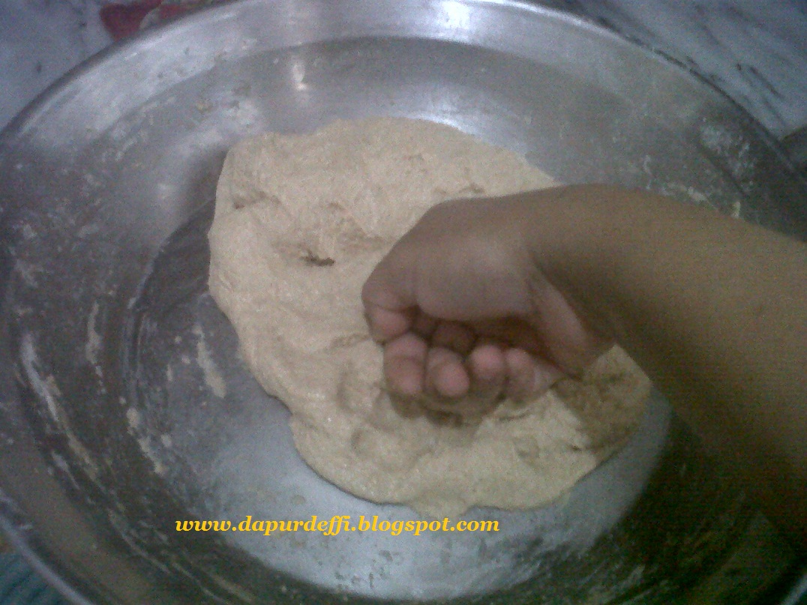

Uleni sampai kalis(aku pake tangan)jangan takut jika adonan lengket ya, lumuri tangan sesekali dengan tepung(tapi jangan menambahkan tepung) uleni terus sampai adonan kalis

Kalisnya adonan canai tidak sekalis adonan roti ya ,kira-kira seperti ini sudah cukup